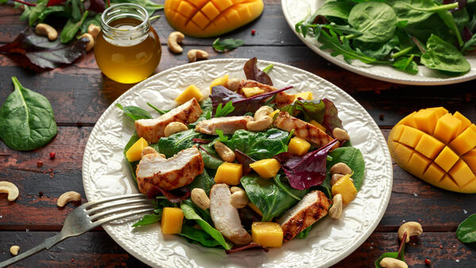

Mango Cashew Salad

This is a recipe we created one night when we wanted a salad for dinner, but were all out of standard salad ingredients. It worked out wonderfully,
and is something that we'll definitely make again.
Ingredients
- 1 mango - peeled, seeded, and cubed
- 1 Granny Smith apple - peeled, cored and diced
- ¾ cup toasted cashews
- 1 tablespoon balsamic vinegar
- ½ teaspoon ground cinnamon
- ¼ teaspoon ground ginger
- 1 pinch salt
Steps
- In a medium bowl, toss together mango, Granny Smith apple, cashews, balsamic vinegar, cinnamon, ginger, and salt.
HOME